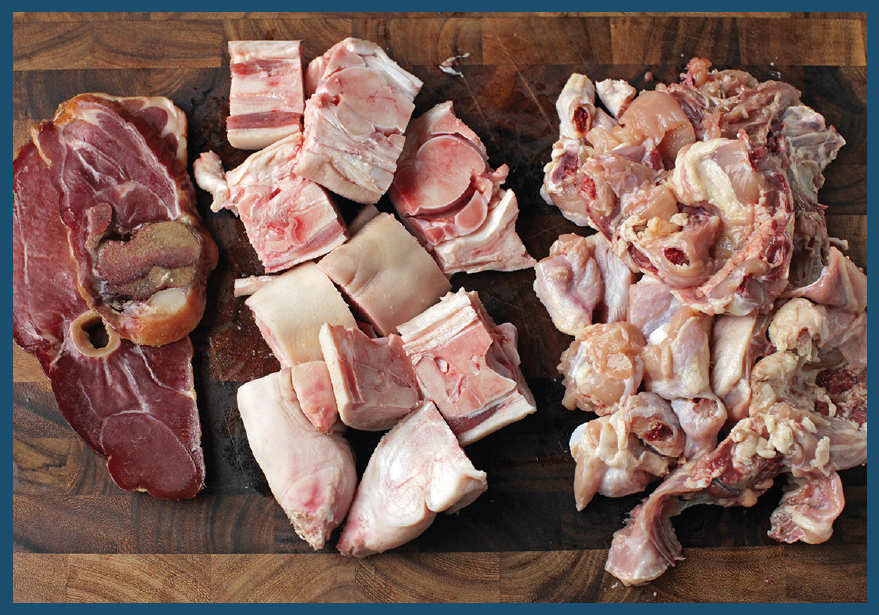
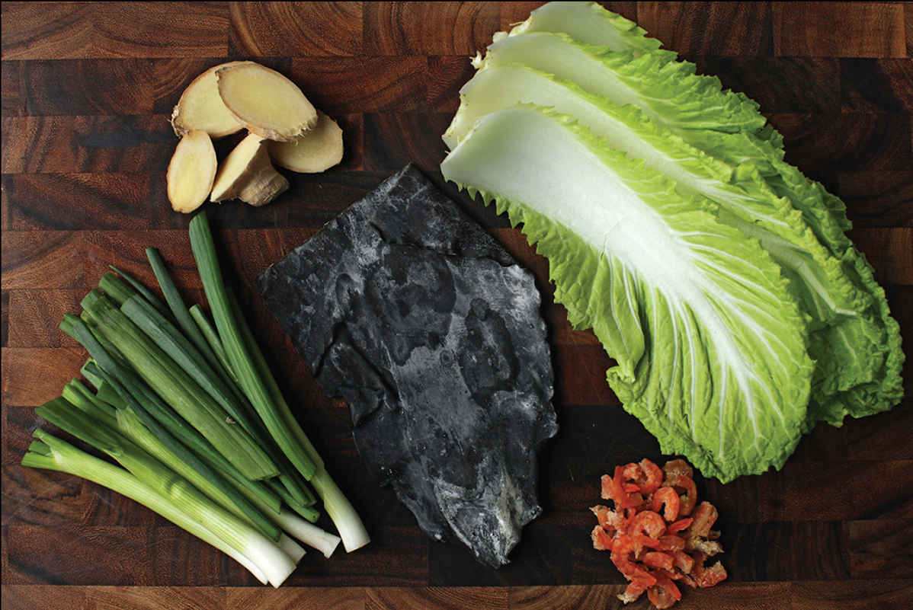

THE INGREDIENTS OF SUPERIOR STOCK
Superior stock (also known as “supreme stock”) is a Chinese stock that combines chicken, pork, and dried shellfish for a complex aroma and flavor that comes from the way various amino acids and peptides extracted from meat and shellfish interact synergistically, for the ultimate in umami. According to Eileen Yin-Fei Lo, author of Mastering the Art of Chinese Cooking, it was developed by restaurant chefs in Guangzhou, where it is known as seung tong (“best soup”). This stock forms the backbone of my favorite style of wonton soup, which happens to be one of my favorite soups in the world. It’s overkill to use this stock for things like stir-fries or soups with many other strongly flavored ingredients, but in brothy, stock-forward soups, it has unparalleled depth.
There are countless recipes for superior stock, and you can always feel free to experiment with using ingredients like dried scallops and shrimp, Jinhua ham versus fresh pork, aromatics like dried tangerine and dried longans, and anything else that strikes your fancy. So long as you have a combination of meaty bits and oceany bits, it’s hard to go wrong.
Here are my usual ingredients:

Chicken Carcasses. Chicken carcasses are inexpensive and provide a modest amount of body and a neutral flavor that can enhance other flavors without overwhelming them.
Pork Bones. I’ve tried using various cuts, including pork necks and leg bones, but I generally go with trotters, which pack a huge amount of connective tissue that gets converted into gelatin, giving the stock a rich texture. Because pork trotters typically contain a lot of marrow that can add impurities that will cloud your stock, it’s important to first blanch them by covering them with water and bringing it to a boil, then drain and scrub them under running water. You can then start the broth with fresh water.
Jinhua Ham. This is a salted ham from Jinhua province that’s been produced since at least the tenth century and is quite similar unsmoked to American-style country hams or unsmoked European hams like prosciutto or Serrano. This is good news if you don’t live near a Chinese market that sells it. Unlike its European and American cousins, Jinhua ham is used primarily for flavoring soups and stews, not for eating plain. I learned the hard way that, like country ham, Jinhua ham must be blanched before cooking, or your broth will end up unbearably salty. You can blanch the ham right along with the pork trotters. If you can’t find either of these, prosciutto or pancetta ends or even a hunk of bacon or salt pork will do the job.
Dried Seafood. Dried scallops, shrimp, or flounder will enhance the umami flavor of meat and cured pork products. In my testing, I found that dried scallops are the best for adding umami without an overpowering seafood aroma, but they’re also the most expensive dried seafood and relatively difficult to find. Usually I add sea-based umami in the form of kombu (which I always have on hand), some dried shrimp, and in dishes where I’m going to include fresh shrimp, the fresh shrimp shells.
Aromatics. Ginger and scallions are the basics. I also like to use a few leaves of Napa cabbage (a flavor I consider essential for wonton soup in particular). Many recipes for superior stock also contain ingredients like dried mushrooms (to enhance umami), tangerine peel, or dried longans (for a citrusy or sweet aroma).
